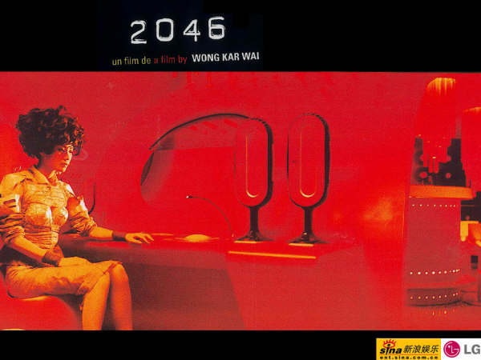
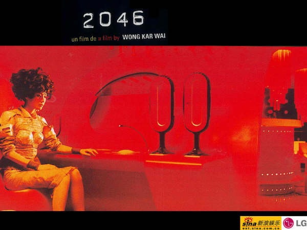

2046, 2046
6/5/2005 10:57:10 PM

《2046》，一部已经躺在我的电脑里面很久的一部电影。
今天，终于看了下来。
不能否定，从《花样年华》到《2046》，王家卫所信仰的氛围艺术，在一些狂热者心中体现出了空前的膨胀。
电影永远是反映生活的，《2046》同是如此。
只是通过了一种特殊的方式，一个特殊的侧面。
性的成分，充斥着，带着欲望的暧昧，梦想的光环，以及异常浪漫的情怀。
通过故事中的故事，《2046》中包含两条相互独立但是内在相关的互相纠缠的时间线，戏中人的感情状态穿越过时间和空间，让故事的细节显得非常丰富，感情的表达深刻而自然，充满了力度。
不知道是不是因为个人的成长，看《2046》虽然不能看透制作者分配每一个镜头的深度所在，却已经感受不到几年前看《花样年华》时候的内心压抑。
在《2046》的时间和空间中穿梭，显得自由、随意，仿佛可以预感剧情的跳跃，感受其中的节律。
觉得一切不可思议，却又合情合理。
在这个作者独特定制的艺术空间，感情和物欲流淌着，“泛滥”却不“滥”。
和在《花样年华》一样，依然可以感受到音乐的氛围对于电影效果的定位显得相当重要，把观看者带到制作人定制的空间中，游离着寻找自己的影子，自己的过去、现在与未来。
这，就是《2046》，2046。
---------------------------------------------
...
一著牡丹盛开
她站起身
走了
留下既非“是”又非“否”的答复
...
他一直没有回头
仿佛坐上一串很长很长的列车
在茫茫的夜色中开往朦胧的未来
...
 


- 6/8/2005 9:06:39 PM
看不懂，还是要顶！！！！